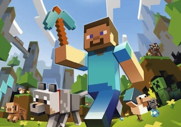
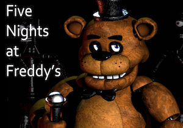
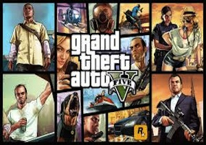
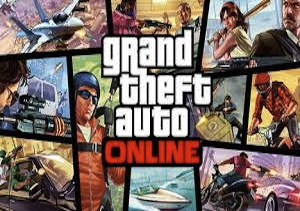

Hola, soy Luis Gael, me gustan los videojuegos, videos y las mascotas especialmente los perros.
De eso se trata mi website.
Un mundo al aire libre donde puedes construir lo que se te antoje, ya sea desde casas hasta castillos si es que tu asi lo quieres. Tambien puedes unirte a servidores con gente en linea para jugar cosas como: Hunger Games, Prop Hunt, PvP, etc...
Five nights at Freddys es un juego en donde eres un guardia de seguridad que tiene que estar al pendiente de los animatronicos y de las camaras para poder sobrevivir hasta completar la noche y llegar a la siguiente.
GTA V es un juego donde ahi dos modos de juego, el principal, que es campaña u online, bueno primero el campaña, en el manejas a tres personajes: Michael, Franklin y trevor.En campaña tienes que ir completando misiones que otros personajes del videojuego te piden que hagas.Tambien puedes realizar deportes y hacer lo que tu quieras por la ciudad de Los Santos.
En este modo de juego puedes crear tu propio personaje, tambien puedes conocer a mas gente, jugar o hasta hacer misiones con ellos aqui puedes comprar y tunear tus vehiculos o hasta comprar una casa si tu quieres.
